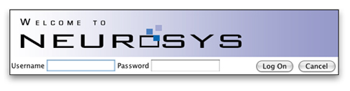
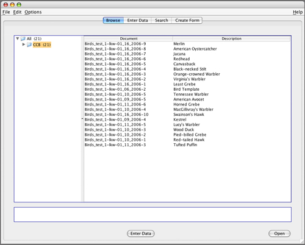

Logging In
The internet-accessible link that points to the NeuroSys database leads, as a first step, to a login screen. There the user is prompted for a name and password before actually connecting to the database.

The name and password combination you use must already exist in the database before you can log in. If you are not currently registered, you can log in to a sample database with username "guest" and password "guest."
After logging in, the NeuroSys screen appears (see below). By default it opens in Browse mode. Click on a folder in the left pane to view its contents in the right pane.
You may also click on a single file name to view a text description of that file in the box below the main Browse window.

| Previous page | Return to top of page | Next page |